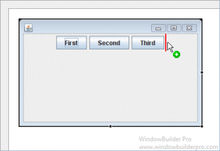
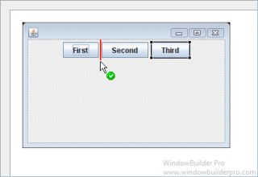
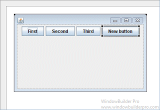
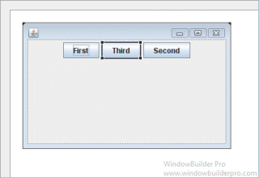

Main Features
- Select FlowPanel from the Panels palette

- Graphical feedback is provided for all drop and move interactions
 
Graphical Feedback
- When moving a widget or adding a new widget, the current drop
point is highlighted in red

